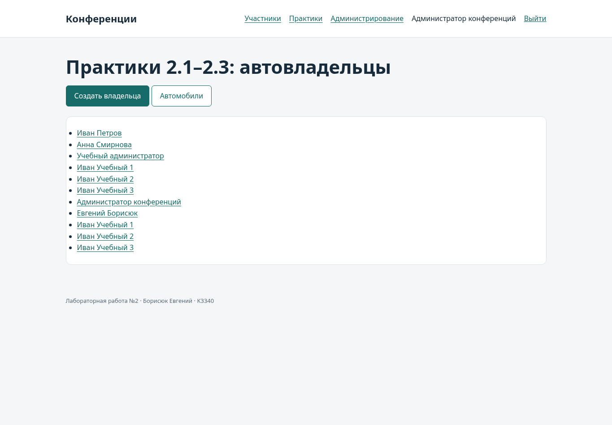

Практические работы 2.1–2.3
Общая структура
Проект называется django_project_borisuk, учебное приложение — project_first_app. Оно подключено к тому же PostgreSQL и отделено от моделей конференций. Практические результаты хранятся вместе с лабораторной, как отдельный модуль; их страницы доступны в разделе /practice/.
Практика 2.1
| Задание | Результат |
|---|---|
| Установить Django, создать проект и приложение | django_project_borisuk, project_first_app, закреплённые зависимости |
| Описать схему автовладельцев | User, Car, Ownership, DriverLicense |
| Создать и применить миграции | project_first_app/migrations/0001_initial.py, команда migrate |
| Зарегистрировать таблицы в admin | OwnerAdmin и регистрация остальных трёх моделей |
| Два владельца, четыре автомобиля, по три связи | seed_demo и тест admin-форм с шестью владениями |
| Вывести владельца через представление и шаблон | owner_detail, jinja2/owner.html |
| Подключить urls.py через include | /practice/owner/ |
Модель сохраняет сущности и связи рисунка из условия, с адаптацией под AbstractUser. User содержит имя, фамилию и дату рождения, DriverLicense — владельца, номер, категорию и дату выдачи. Car содержит госномер, марку, модель и цвет. Ownership содержит владельца, автомобиль и начало/окончание владения. Все таблицы и поля именуются латиницей.
На рисунке поля дат обозначены datetime. Здесь применён DateField, как в примерах практики 2.2: задания оперируют календарными датами, а не временем суток. Необязательный цвет хранится пустой строкой по соглашению Django для CharField. Длины имени и фамилии сохранены стандартными для AbstractUser, вместо ограничения в 30 символов на исходном рисунке.
Общая User используется и автовладельцами, и авторами конференций. Поэтому дата рождения и паспортные атрибуты не требуются у автора без автомобиля. При создании владельца через OwnerForm дата рождения, имя, фамилия, паспорт, адрес и национальность обязательны. Ownership.clean проверяет данные выбранного владельца при создании и изменении владения, а DriverLicense.clean — при выдаче удостоверения. User.clean проверяет их при заполненном паспорте, наличии истории владения или удостоверения. Поэтому назначить владельцем автора с неполными данными и затем удалить обязательные данные владельца через Django-admin нельзя. Проверка отвергает и строки, содержащие только пробелы. Ограничение PostgreSQL owner_requires_birth_date запрещает запись с паспортом и отсутствующей датой рождения даже при прямом обращении через ORM. Это осознанное отличие от безусловного NOT NULL на рисунке: автор конференции не обязан быть автовладельцем.
Связанные требования проверяются в моделях и стандартных admin-формах; при собственных записях через ORM необходимо вызывать full_clean перед save. Проверки межтабличных связей не заявляются как ограничения PostgreSQL.
Первый учебный владелец связан с автомобилями 1–3 в 2023–2024 годах, второй — с автомобилями 2–4 с 2025 года. По три связи у каждого; даты по одному автомобилю не пересекаются. Это проверяется валидацией модели при сохранении через admin-формы. Дополнительно БД запрещает окончание периода раньше начала. Проверка пересечений в clean предназначена для последовательных учебных операций и не является защитой от конкурентных записей напрямую через ORM.
Автоматический тест test_admin_creates_two_owners_and_four_cars выполняет создание двух пользователей, четырёх автомобилей и шести владений именно через POST-формы Django-admin. Повторяемые данные для личной демонстрации загружаются отдельной командой seed_demo.
Практика 2.2
Связь Car.owners реализована ManyToManyField через Ownership с датами владения. Список всех владельцев — FBV owner_list; создание владельца — FBV owner_create и OwnerForm. Список и карточка автомобилей — CarList и CarDetail; создание, редактирование и удаление — CarCreate, CarUpdate, CarDelete на стандартных CBV.
В тестах через формы добавляются минимум три новых владельца и три автомобиля. Проверяются карточка, список, обновление цвета и удаление с подтверждением. Создание трёх владельцев и трёх автомобилей также пройдено в Chromium.
Практика 2.3
User наследует AbstractUser и добавляет passport_number, address, nationality и birth_date. AUTH_USER_MODEL задаётся до первой миграции. Ссылки других моделей направлены на settings.AUTH_USER_MODEL, а не на встроенную модель auth.User.
Новые поля отображаются в OwnerAdmin при создании и редактировании. Форма OwnerForm создаёт полноценного пользователя, хеширует пароль и запрашивает атрибуты владельца. Списки и карточки работают с обновлённой пользовательской моделью. Обычная регистрация автора конференции не требует паспортных данных; учебные страницы с ними доступны только администратору.

Воспроизведение
- Выполнить migrate, createsuperuser и seed_demo по README.
- Войти администратором и открыть /practice/owners/.
- Открыть карточку владельца и историю владения автомобилями.
- Создать ещё трёх владельцев через «Создать владельца».
- Открыть /practice/cars/, добавить три автомобиля, изменить и удалить одну запись.
- В /admin/ проверить расширенную модель пользователя и остальные учебные таблицы.
- Запустить python manage.py test project_first_app --verbosity 2.
Все демонстрационные паспортные номера и адреса являются вымышленными.